Dog Ownership in Seattle
November 16 2016 • 21 min read
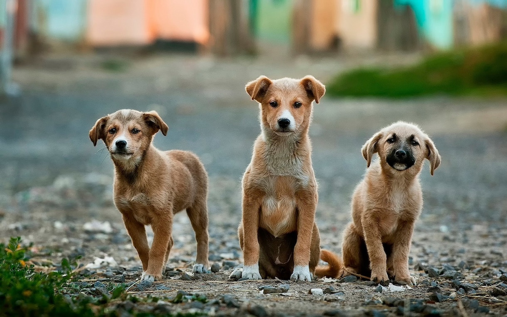
Image by Anoir Chafik
Introduction
This report investigates licensed dog ownership in Seattle, WA (USA).
I’m curious about a few things here:
People estimate that there are 160,000 dogs in Seattle. Where are they?
Seattle is a relatively densely-populated area. Are small, apartment-friendly dogs preferred?
Using this information, what recommendations could be made to aspiring dog sitters and walkers in Seattle?
I will annotate each step of data analysis as I go.
Time to get started!
Loading Necessary Packages
# For mapping
library(choroplethr)
library(choroplethrZip)
library(ggmap)
library(mapproj)
library(zipcode)
# For data manipulation and tidying
library(dplyr)
library(tidyr)
# For data visualizations
library(ggplot2)
library(tm)
library(SnowballC)
library(wordcloud)
# For modeling and machine learning
library(caret)Importing Licensed Dog Ownership Data
The spreadsheet containing all licensed dog ownership information was obtained from the Seattle Times article “Mapping the Dogs of Seattle” and is available for download. According to the article, the original data were obtained from the Seattle Animal Shelter and represent the 43,000 licensed dogs in Seattle as of February 2015. Note: This number is thought to only represent approximately 27% of the dog population in Seattle
dogs <- read.csv(file = "Seattle_Dogs_2015.csv", header = TRUE,
stringsAsFactors = TRUE)Great! Let’s take a quick look at the data file.
str(dogs)## 'data.frame': 42996 obs. of 7 variables:
## $ License.Type.Sold: Factor w/ 15 levels "Dog 6 Month Prov/Rabies",..: 1 1 1 1 1 1 1 1 2 2 ...
## $ Animal.Type : Factor w/ 1 level "Dog": 1 1 1 1 1 1 1 1 1 1 ...
## $ Gender : Factor w/ 3 levels "Female","Male",..: 2 1 1 2 2 1 2 2 1 2 ...
## $ Primary.Breed : Factor w/ 227 levels "Affenpinscher",..: 53 53 174 123 137 102 53 106 26 15 ...
## $ Primary.Color : Factor w/ 90 levels "","Amber","Apricot",..: 85 6 85 10 10 9 9 36 83 56 ...
## $ Name : Factor w/ 10712 levels ""," "," Carlota",..: 603 9763 317 1324 3671 5764 6065 4254 490 7006 ...
## $ Zip.C : Factor w/ 155 levels "","*/116","14534",..: 107 107 100 75 84 1 86 77 107 87 ...It looks like the variables we are working with right now:
- License Type : Indicates what type of license the dog has
- Animal Type : Since this dataset is all about dogs, there is only one animal type listed: “Dog”
- Gender : Dog’s sex (“Male”, “Female”, or “Unspec”)
- Primary Breed : Indicates the general breed of the dog
- Primary Color : Indicates the dog’s overall color
- Name : Lists the dog’s name
- Zip.C : Indicates the zipcode where the dog is registered
We can eliminate the “Animal Type” column since it doesn’t give us any additional information.
dogs <- dogs %>% select(-2)Ok, now is there anyway to condense or standardize the breeds listed?
Let’s take a look at what kind of breeds are present in Seattle.
levels(dogs$Primary.Breed)## [1] "Affenpinscher" "Afghan Hound"
## [3] "Airedale Terrier" "Akita"
## [5] "Alaskan Malumute" "Amer. Pitbull Terrier"
## [7] "Amer. Water Spaniel" "Amer.Staffordshire Terrier"
## [9] "American Eskimo" "American Foxhound"
## [11] "Appenzel Mountain Dog" "Australian Cattle Dog"
## [13] "Australian Kelpie" "Australian Shepard"
## [15] "Australian Terrier" "Basenji"
## [17] "Basset Hound" "Beagle"
## [19] "Bearded Collie" "Beauceron"
## [21] "Belgian Malinios" "Belgian Malinois"
## [23] "Belgian Sheepdog" "Belgian Shepherd"
## [25] "Belgian Tervuren" "Bernese Mountain Dog"
## [27] "Bichon Frise" "Bloodhound"
## [29] "Blue Heeler" "Bordeaux Mastiff"
## [31] "Border Collie" "Border Terrier"
## [33] "Borzoi" "Boston Terrier"
## [35] "Bouvier De Flanders" "Boxer"
## [37] "Briard" "Brittany Spaniel"
## [39] "Brussels Griffon" "Bull Terrier"
## [41] "Bull Terrier, Minature" "Bulldog"
## [43] "Bulldog American" "Bulldog English"
## [45] "Bullmastiff" "Cairn Terrier"
## [47] "Canaan Dog" "Cane Corso"
## [49] "Carolina" "Catahoula Leopard Dog"
## [51] "Cavalier King Charles Spaniel" "Chesapeake Bay Retriever"
## [53] "Chihuahua" "Chihuahua, Long-haired"
## [55] "Chinese Crested" "Chinook"
## [57] "Chow Chow" "Cirneco Dell Etna"
## [59] "Clumber Spaniel" "Cocker Spaniel"
## [61] "Cocker Spaniel, American" "Cocker Spaniel, English"
## [63] "Collie" "Collie, Rough-Coated"
## [65] "Collie, Smooth-Coated" "Coonhound"
## [67] "Coonhound, Redbone" "Coonhound, Walker"
## [69] "Corgi" "Corgi, Cardigan Welsh"
## [71] "Corgi, Pembroke Welsh" "Coton de Tulear"
## [73] "Coton Retulear" "Curly-Coated Retriever"
## [75] "Curs" "Dachshund"
## [77] "Dachshund, Long-Haired" "Dachshund, Minature"
## [79] "Dachshund, Standard" "Dachshund, Wirehaired"
## [81] "Dalmatian" "Dandie Dinmont Terrier"
## [83] "Dingo" "Doberman Pinscher"
## [85] "Dogo de Argentino" "Dogue De Bordeaux"
## [87] "Elkhound" "English Foxhound"
## [89] "English Setter" "English Springer Spaniel"
## [91] "English Toy Spaniel" "Entelbucher"
## [93] "Field Spaniel" "Finnish Spitz"
## [95] "Flat-Coated Retriever" "Formosan Mountain Dog"
## [97] "Fox Terrier" "Fox Terrier, Smooth"
## [99] "Fox Terrier, Toy" "Fox Terrier, Wirehaired"
## [101] "French Bulldog" "German Shepherd"
## [103] "German Shorthair Pointer" "German Wirehair Pointer"
## [105] "Giffon Vendeen" "Golden Retriever"
## [107] "Goldendoodle" "Gordon Setter"
## [109] "Great Dane" "Great Pyrenees"
## [111] "Greater Swiss Mountain Dog" "Greyhound"
## [113] "Harrier" "Havanese"
## [115] "Hound" "Husky"
## [117] "Ibizan Hound" "Irish Setter"
## [119] "Irish Terrier" "Irish Wolfhound"
## [121] "Italian Greyhound" "Italian Spinone"
## [123] "Jack Russell Terrier" "Japanese Chin"
## [125] "Japanese Fox" "Kairn Terrier"
## [127] "Karelian Bear Dog" "Keeshond"
## [129] "Kerry Blue Terrier" "King Charles Spaniel"
## [131] "Kookier Hound" "Korean Chin-do"
## [133] "Kuvasz" "Kyileo"
## [135] "Lab Retriever" "Labradoodle"
## [137] "Labrador Retriever" "Lakeland Terrier"
## [139] "Landseer" "Leonberger"
## [141] "Lhaso Apso" "Looks Like"
## [143] "Lowchen" "Maltese"
## [145] "Manchester Terrier" "Manchester Terrier, Toy"
## [147] "Mastiff" "McNab"
## [149] "Mexican Hairless" "Miniture Pinscher"
## [151] "Mix" "Neapolitan Mastiff"
## [153] "Newfoundland" "Norfolk Terrier"
## [155] "Norwegian Elkhound" "Norwegian Lundehund"
## [157] "Norwich Terrier" "Novia Scotia Duck Tolling Retr"
## [159] "NULL" "Old English Sheepdog"
## [161] "Otterhound" "Papillon"
## [163] "Pekingese" "Pharaoh Hound"
## [165] "Pitbull" "Plott Hound"
## [167] "Pointer" "Pointing Griffon, Wirehaired"
## [169] "Pomeranian" "Poodle"
## [171] "Poodle, Minature" "Poodle, Standard"
## [173] "Poodle, Teacup" "Poodle, Toy"
## [175] "Portuguese Water Dog" "Pug"
## [177] "Puli" "Purebred"
## [179] "Queensland Blue Heeler" "Red Heeler"
## [181] "Rhodesian Ridgeback" "Rottweiler"
## [183] "Saint Bernard" "Saluki"
## [185] "Samoyed" "Schipperke"
## [187] "Schnauzer" "Schnauzer, Giant"
## [189] "Schnauzer, Minature" "Schnauzer, Standard"
## [191] "Scottish Deerhound" "Scottish Terrier"
## [193] "Sealyham Terrier" "See Notes"
## [195] "Setter" "Shar-Pei"
## [197] "Shepherd" "Shetland Sheepdog"
## [199] "Shiba Inu" "Shih Tzu"
## [201] "Siberian Husky" "Silken Windhound"
## [203] "Silky Terrier" "Spaniel"
## [205] "Springer Spaniel" "Staffordshire Bull Terrier"
## [207] "Sussex Spaniel" "Terrier"
## [209] "Terrier, Black Russian" "Terrier, Rat"
## [211] "Terrier, Soft-Coated Wheaten" "Tibetan Mastiff"
## [213] "Tibetan Spaniel" "Tibetan Terrier"
## [215] "Unspecified" "Vizsla"
## [217] "Water Spaniel" "Weimaraner"
## [219] "Welsh Springer Spaniel" "Welsh Terrier"
## [221] "West Highland Terrier" "West Highland White Terrier"
## [223] "West Hihgland White Terrier" "Whippet"
## [225] "Wirehair Terrier" "Wolf Hybrid"
## [227] "Yorkshire Terrier"Wow! That’s quite a few! We’ll come back to cleaning up the species names in a bit.
Generally, the dog’s estimated size may be more beneficial than their breed, so let’s try to pair these data up with information from other sources. The data used are available here. Time to import the database of dog breeds with their sizes.
weight <- read.csv(file = "Breed_Wt.csv", header = TRUE, stringsAsFactors = FALSE)Now let’s see what that looks like.
str(weight)## 'data.frame': 372 obs. of 3 variables:
## $ Breed : chr "Airedoodle" "Alapaha Blue Blood Bulldog" "Alaskan Klee Kai" "Alsatian" ...
## $ Average.Adult.Weight : chr "Male: 45-65 lbs" "Male: 50-80 lbs" "Male: 11-15 lbs" "Male: 65-85 lbs" ...
## $ Average.Adult.Weight.1: chr "Female: 45-65 lbs" "Female: 50-80 lbs" "Female: 11-15 lbs" "Female: 50-70 lbs" ...head(weight)## Breed Average.Adult.Weight Average.Adult.Weight.1
## 1 Airedoodle Male: 45-65 lbs Female: 45-65 lbs
## 2 Alapaha Blue Blood Bulldog Male: 50-80 lbs Female: 50-80 lbs
## 3 Alaskan Klee Kai Male: 11-15 lbs Female: 11-15 lbs
## 4 Alsatian Male: 65-85 lbs Female: 50-70 lbs
## 5 American Bulldog Male: 45-75 lbs Female: 45-75 lbs
## 6 Aussiedoodle Male: 35-65 lbs Female: 25-55 lbsCleaning Data
Looks like lots of character strings. Time to split out some of these columns. We’ll use the R packages tidyr and dplyr for this.
# Delete empty rows
weight <- weight[!apply(weight == "", 1, all), ]
# Splitting Average Adult Weight (Species with Weight Ranges)
weight_split <- weight %>% separate(Average.Adult.Weight, into = c("Male",
"Wt_Range"), sep = ": ") %>% filter(grepl("-", Wt_Range)) %>%
separate(Wt_Range, into = c("Min", "Max", "lbs")) %>% select(-lbs) %>%
separate(Average.Adult.Weight.1, into = c("Female", "Wt_Range_F"),
sep = ": ") %>% filter(grepl("-", Wt_Range_F)) %>% separate(Wt_Range_F,
into = c("Min_F", "Max_F", "lbs_F")) %>% mutate_each(funs(as.numeric),
(Min:Max)) %>% mutate_each(funs(as.numeric), (Min_F:Max_F)) %>%
mutate(Male_Avg = (Min + Max)/2) %>% mutate(Female_Avg = (Min_F +
Max_F)/2) %>% select(1, 9:10)
# Splitting Average Adult Weight (no ranges)
weight_split_2 <- weight %>% separate(Average.Adult.Weight, into = c("Male",
"Wt_Range"), sep = ": ") %>% filter(!grepl("-", Wt_Range)) %>%
separate(Wt_Range, into = c("Male_Avg", "lbs")) %>% separate(Average.Adult.Weight.1,
into = c("Female", "Wt_Range_F"), sep = ": ") %>% separate(Wt_Range_F,
into = c("Female_Avg", "lbs_2")) %>% select(1, 3, 6)
# Bind Both Data Frames
weight_split_all <- rbind(weight_split_2, weight_split)
# Check out our new dataframe
head(weight_split_all)## Breed Male_Avg Female_Avg
## 1 Afghan Hound 60 50
## 2 Airedale Terrier 55 55
## 3 Alaskan Malamute 85 75
## 4 Basenji 24 22
## 5 English Bulldog 50 40
## 6 Cairn Terrier 14 13Great! Now we have a dataframe that just lists breed, and then average weight for males and females. Now we can use this to fill in the estimated weight for each of the animals in our dogs dataset.
# Make a copy of our dataset
dogs_2 <- dogs
# Match dog breed from dogs dataset to breed from
# weight_split_all dataset
dogs_2$Male_Avg <- weight_split_all[match(dogs_2$Primary.Breed,
weight_split_all$Breed), "Male_Avg"]
dogs_2$Male_Avg <- as.numeric(dogs_2$Male_Avg)
dogs_2$Female_Avg <- weight_split_all[match(dogs_2$Primary.Breed,
weight_split_all$Breed), "Female_Avg"]
dogs_2$Female_Avg <- as.numeric(dogs_2$Female_Avg)Great! Let’s check how we did.
summary(dogs_2$Male_Avg)## Min. 1st Qu. Median Mean 3rd Qu. Max. NA's
## 5.00 16.00 52.50 47.53 72.50 182.50 11611Well, looks like our system automatically placed 73% of our entries, the remaining 27% (or 11,611 dogs) were not found. Let’s see if those were all the same or similar species.
missing_size <- dogs_2 %>% filter(is.na(Male_Avg)) %>% group_by(Primary.Breed) %>%
summarise(count = n())
head(missing_size)## # A tibble: 6 × 2
## Primary.Breed count
## <fctr> <int>
## 1 Alaskan Malumute 123
## 2 Amer. Pitbull Terrier 137
## 3 Amer. Water Spaniel 5
## 4 Amer.Staffordshire Terrier 186
## 5 Appenzel Mountain Dog 3
## 6 Australian Shepard 1216Ah, looks like we have a few misspelled names in our original database. Let’s try to clean those up a bit.
Due to the random nature of the misspellings and re-wording of breeds in this dataset, I’ll use the gsub function to manually recode the ones that need it. This also allows for verification that the correct new term is being used.
# Fixing Misspellings
dogs_2$Primary.Breed <- gsub("Alaskan Malumute", "Alaskan Malamute",
dogs_2$Primary.Breed)
dogs_2$Primary.Breed <- gsub("Shepard", "Shepherd", dogs_2$Primary.Breed)
dogs_2$Primary.Breed <- gsub("Belgian Malinios", "Belgian Malinois",
dogs_2$Primary.Breed)
dogs_2$Primary.Breed <- gsub("Bouvier De Flanders", "Bouvier des Flandres",
dogs_2$Primary.Breed)
dogs_2$Primary.Breed <- gsub("Coton Retulear", "Coton de Tulear",
dogs_2$Primary.Breed)
dogs_2$Primary.Breed <- gsub("Dogo de Argentino", "Dogo Argentino",
dogs_2$Primary.Breed)
dogs_2$Primary.Breed <- gsub("Entelbucher", "Entlebucher", dogs_2$Primary.Breed)
dogs_2$Primary.Breed <- gsub("German Shorthair Pointer", "German Shorthaired Pointer",
dogs_2$Primary.Breed)
dogs_2$Primary.Breed <- gsub("German Wirehair Pointer", "German Wirehaired Pointer",
dogs_2$Primary.Breed)
dogs_2$Primary.Breed <- gsub("Giffon Vendeen", "Griffon Vendeen",
dogs_2$Primary.Breed)
dogs_2$Primary.Breed <- gsub("Italian Spinone", "Spinone Italiano",
dogs_2$Primary.Breed)
dogs_2$Primary.Breed <- gsub("Kairn Terrier", "Cairn Terrier",
dogs_2$Primary.Breed)
dogs_2$Primary.Breed <- gsub("Kookier Hound", "Kooikerhondje",
dogs_2$Primary.Breed)
dogs_2$Primary.Breed <- gsub("Korean Chin-do", "Jindo", dogs_2$Primary.Breed)
dogs_2$Primary.Breed <- gsub("Kyileo", "Kyi-Leo", dogs_2$Primary.Breed)
dogs_2$Primary.Breed <- gsub("Lhaso Apso", "Lhasa Apso", dogs_2$Primary.Breed)
dogs_2$Primary.Breed <- gsub("Miniture Pinscher", "Miniature Pinscher",
dogs_2$Primary.Breed)
dogs_2$Primary.Breed <- gsub("Novia Scotia Duck Tolling Retr",
"Nova Scotia Duck Tolling Retriever", dogs_2$Primary.Breed)
dogs_2$Primary.Breed <- gsub("^Setter$", "English Setter", dogs_2$Primary.Breed)
dogs_2$Primary.Breed <- gsub("West Hihgland White Terrier|West Highland White Terrier",
"West Highland Terrier", dogs_2$Primary.Breed)
dogs_2$Primary.Breed <- gsub("Amer.Staffordshire Terrier", "American Staffordshire Terrier",
dogs_2$Primary.Breed)
# Change any 'Amer.' to 'American'
dogs_2$Primary.Breed <- gsub("^Amer\\.$", "American", dogs_2$Primary.Breed,
fixed = TRUE)
# Another name for Bordeaux Mastiff is 'French Mastiff'
dogs_2$Primary.Breed <- gsub("Bordeaux Mastiff|Dogue De Bordeaux",
"French Mastiff", dogs_2$Primary.Breed)
# Change 'Elkhound' to 'Norwegian Elkhound'
dogs_2$Primary.Breed <- gsub("^Elkhound$", "Norwegian Elkhound",
dogs_2$Primary.Breed)
# Change 'Husky' to 'Siberian Husky'
dogs_2$Primary.Breed <- gsub("^Husky$", "Siberian Husky", dogs_2$Primary.Breed)
# Change King Charles Spaniel to Cavalier King Charles
# Spaniel
dogs_2$Primary.Breed <- gsub("King Charles Spaniel|Cavalier King Charles Spaniel",
"Cavalier King Charles Spaniel", dogs_2$Primary.Breed)
# Change Lab Retriever to Labrador Retriever
dogs_2$Primary.Breed <- gsub("Lab Retriever", "Labrador Retriever",
dogs_2$Primary.Breed)
# Mexican Hairless are also called 'Xolo'
dogs_2$Primary.Breed <- gsub("Mexican Hairless", "Xolo", dogs_2$Primary.Breed)
# Queensland Blue Heelers and Red Heelers are more commonly
# known as Australian Cattle Dogs
dogs_2$Primary.Breed <- gsub("Queensland Blue Heeler|Red Heeler",
"Australian Cattle Dog", dogs_2$Primary.Breed)
# Water Spaniels are the same as American Water Spaniels
dogs_2$Primary.Breed <- gsub("Amer\\. Water Spaniel|^Water Spaniel$",
"American Water Spaniel", dogs_2$Primary.Breed)
# Japanese Foxes are also called 'Shiba Inu'
dogs_2$Primary.Breed <- gsub("Japanese Fox", "Shiba Inu", dogs_2$Primary.Breed)
# Changing the order of some words
dogs_2$Primary.Breed <- gsub("Bull Terrier, Minature", "Miniature Bull Terrier",
dogs_2$Primary.Breed)
dogs_2$Primary.Breed <- gsub("Bulldog American", "American Bulldog",
dogs_2$Primary.Breed)
dogs_2$Primary.Breed <- gsub("Bulldog English", "English Bulldog",
dogs_2$Primary.Breed)
dogs_2$Primary.Breed <- gsub("Cocker Spaniel, American", "American Cocker Spaniel",
dogs_2$Primary.Breed)
dogs_2$Primary.Breed <- gsub("Cocker Spaniel, English", "English Cocker Spaniel",
dogs_2$Primary.Breed)
dogs_2$Primary.Breed <- gsub("Corgi, Cardigan Welsh", "Cardigan Welsh Corgi",
dogs_2$Primary.Breed)
dogs_2$Primary.Breed <- gsub("Corgi, Pembroke Welsh", "Pembroke Welsh Corgi",
dogs_2$Primary.Breed)
dogs_2$Primary.Breed <- gsub("Dachshund, Minature", "Miniature Dachshund",
dogs_2$Primary.Breed)
dogs_2$Primary.Breed <- gsub("Fox Terrier, Toy", "Toy Fox Terrier",
dogs_2$Primary.Breed)
dogs_2$Primary.Breed <- gsub("Manchester Terrier, Toy", "Toy Manchester Terrier",
dogs_2$Primary.Breed)
dogs_2$Primary.Breed <- gsub("Pointing Griffon, Wirehaired",
"Wirehaired Pointing Griffon", dogs_2$Primary.Breed)
dogs_2$Primary.Breed <- gsub("Poodle, Minature", "Miniature Poodle",
dogs_2$Primary.Breed)
dogs_2$Primary.Breed <- gsub("Schnauzer, Giant", "Giant Schnauzer",
dogs_2$Primary.Breed)
dogs_2$Primary.Breed <- gsub("Schnauzer, Minature", "Miniature Schnauzer",
dogs_2$Primary.Breed)
dogs_2$Primary.Breed <- gsub("Terrier, Black Russian", "Black Russian Terrier",
dogs_2$Primary.Breed)
dogs_2$Primary.Breed <- gsub("Terrier, Rat", "Rat Terrier", dogs_2$Primary.Breed)
dogs_2$Primary.Breed <- gsub("Terrier, Soft-Coated Wheaten",
"Soft Coated Wheaten Terrier", dogs_2$Primary.Breed)
# Combine similar types
dogs_2$Primary.Breed <- gsub("Collie, Rough-Coated|Collie, Smooth-Coated",
"Collie", dogs_2$Primary.Breed)
dogs_2$Primary.Breed <- gsub("Chihuahua, Long-haired", "Chihuahua",
dogs_2$Primary.Breed)
dogs_2$Primary.Breed <- gsub("Coonhound, Redbone|Coonhound, Walker",
"Coonhound", dogs_2$Primary.Breed)
dogs_2$Primary.Breed <- gsub("Dachshund, Long-Haired|Dachshund, Standard|Dachshund, Wirehaired|^Dachshund$",
"Standard Dachshund", dogs_2$Primary.Breed)
dogs_2$Primary.Breed <- gsub("^Fox Terrier$|Fox Terrier, Smooth|Fox Terrier, Wirehaired|Wirehair Terrier",
"Standard Fox Terrier", dogs_2$Primary.Breed)
dogs_2$Primary.Breed <- gsub("^Poodle$|Poodle, Standard", "Standard Poodle",
dogs_2$Primary.Breed)
dogs_2$Primary.Breed <- gsub("Poodle, Teacup|Poodle, Toy", "Toy Poodle",
dogs_2$Primary.Breed)
dogs_2$Primary.Breed <- gsub("^Schnauzer$|Schnauzer, Standard",
"Standard Schnauzer", dogs_2$Primary.Breed)That was a lot of very different errors in that dataset! Let’s see if that helped.
# Match dog breed from dogs dataset to breed from
# weight_split_all dataset
dogs_2$Male_Avg <- weight_split_all[match(dogs_2$Primary.Breed,
weight_split_all$Breed), "Male_Avg"]
dogs_2$Male_Avg <- as.numeric(dogs_2$Male_Avg)
dogs_2$Female_Avg <- weight_split_all[match(dogs_2$Primary.Breed,
weight_split_all$Breed), "Female_Avg"]
dogs_2$Female_Avg <- as.numeric(dogs_2$Female_Avg)Let’s see how we did.
summary(dogs_2$Male_Avg)## Min. 1st Qu. Median Mean 3rd Qu. Max. NA's
## 5.00 15.50 50.00 45.19 72.50 182.50 3503Well, that did fix some of the missing values! Still another 3,503 (or 8%) to go!
missing_size_2 <- dogs_2 %>% filter(is.na(Male_Avg)) %>% group_by(Primary.Breed) %>%
summarise(count = n())
missing_size_2$Primary.Breed## [1] "Amer. Pitbull Terrier" "Appenzel Mountain Dog"
## [3] "Belgian Shepherd" "Bulldog"
## [5] "Carolina" "Cirneco Dell Etna"
## [7] "Curs" "Dingo"
## [9] "Entlebucher" "Formosan Mountain Dog"
## [11] "Hound" "Kyi-Leo"
## [13] "Landseer" "Looks Like"
## [15] "McNab" "Mix"
## [17] "Norwegian Lundehund" "NULL"
## [19] "Purebred" "Saluki"
## [21] "See Notes" "Shepherd"
## [23] "Silken Windhound" "Spaniel"
## [25] "Terrier" "Toy Manchester Terrier"
## [27] "Unspecified" "Welsh Springer Spaniel"
## [29] "Wolf Hybrid" "Xolo"It looks like a few of these can’t be sorted. For example, we have no way of estimating size for “Looks Like”, “Mix”, “Purebred”, “See Notes” or “Unspecified”, so I’ll make the sizes of all of those “NA”.
dogs_2$Primary.Breed <- gsub("Looks Like|^Mix$|NULL|Purebred|See Notes|Unspecified|^Curs$",
NA, dogs_2$Primary.Breed)
# Calculate how many are missing now
missing_size_3 <- dogs_2 %>% filter(is.na(Male_Avg)) %>% group_by(Primary.Breed) %>%
summarise(count = n())So of our remaining 3,503 dogs, how many of them have sizes that we can’t estimate?
missing_size_3[which(is.na(missing_size_3)), ]## # A tibble: 1 × 2
## Primary.Breed count
## <chr> <int>
## 1 <NA> 1313We can’t estimate 1,313 dogs’ sizes, which means that we can still estimate the size of the remaining 2,190 dogs. We only have a few species left, and it looks like they weren’t ones that were in our original weights dataset.
missing_size_3$Primary.Breed## [1] "Amer. Pitbull Terrier" "Appenzel Mountain Dog"
## [3] "Belgian Shepherd" "Bulldog"
## [5] "Carolina" "Cirneco Dell Etna"
## [7] "Dingo" "Entlebucher"
## [9] "Formosan Mountain Dog" "Hound"
## [11] "Kyi-Leo" "Landseer"
## [13] "McNab" "Norwegian Lundehund"
## [15] "Saluki" "Shepherd"
## [17] "Silken Windhound" "Spaniel"
## [19] "Terrier" "Toy Manchester Terrier"
## [21] "Welsh Springer Spaniel" "Wolf Hybrid"
## [23] "Xolo" NASince there are only a few breeds left, I will manually create a database of the average weights (all found on the Wikipedia pages for the species).
I’ll upload in the supplemental file and match the breed name and mass.
# Import File
supp_weight <- read.csv(file = "Supp_Breed_Wt.csv", header = TRUE,
stringsAsFactors = FALSE)
# Make a copy of our filtered dataset
dogs_3 <- dogs_2 %>% filter(is.na(Male_Avg))
dogs_4 <- dogs_2 %>% filter(!is.na(Male_Avg))
# Match dog breed from dogs dataset to breed from
# weight_split_all dataset
dogs_3$Male_Avg <- supp_weight[match(dogs_3$Primary.Breed, supp_weight$Breed),
"Male_Avg"]
dogs_3$Male_Avg <- as.numeric(dogs_3$Male_Avg)
dogs_3$Female_Avg <- supp_weight[match(dogs_3$Primary.Breed,
supp_weight$Breed), "Female_Avg"]
dogs_3$Female_Avg <- as.numeric(dogs_3$Female_Avg)
# Bind datasets back together
dogs_5 <- rbind(dogs_3, dogs_4)summary(dogs_5$Male_Avg)## Min. 1st Qu. Median Mean 3rd Qu. Max. NA's
## 5.00 16.00 50.00 45.77 72.50 182.50 1313Awesome! So the only dogs that we still don’t have approximate weights on are the ones with miscoded breeds. Now let’s get a better approximation of weight based on gender.
dogs_5$Gender <- as.factor(dogs_5$Gender)
dogs_5 <- dogs_5 %>% mutate(weight = ifelse(Gender == "Female",
Female_Avg, Male_Avg))Perfect. Now we can make an estimate of how they would be categorized on “Rover.com”, a Seattle-based website aimed at helping dog-owners find reliable dog-sitters and walkers. Their website lists the following size cutoffs (in lbs):
- Small = 0 - 15
- Medium = 16 - 40
- Large = 41 - 100
- Giant = 100 +
Let’s add those classifications to our dataset.
dogs_5 <- dogs_5 %>% mutate(size_class = ifelse(weight <= 15,
"Small", ifelse(weight > 15 & weight <= 40, "Medium", ifelse(weight >
40 & weight <= 100, "Large", ifelse(weight > 100, "Giant",
NA)))))
dogs_5$size_class <- as.factor(dogs_5$size_class)Now we’ve got information on dogs, with their breeds, zipcodes and approximate sizes and size classes. This will help us later.
Data Visualizations
Dog Popularity – By Breed
Now let’s look at some visualizations. We’ll start with the popularity of each dog breed within Seattle. This figure shows the top 24 most popular breeds in the city.
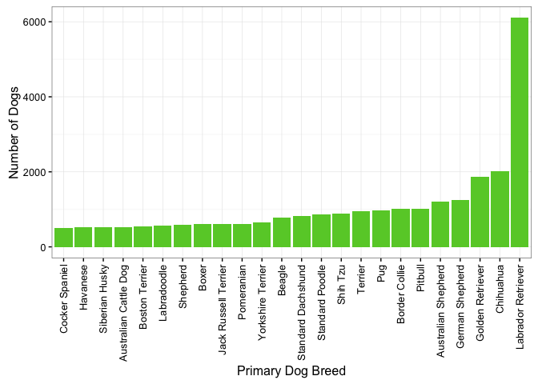
Wow! Looks like labrador retrievers are by far the most popular breed of dog in Seattle.
Dog Popularity – By Size
How do the numbers of dogs break down by dog size?
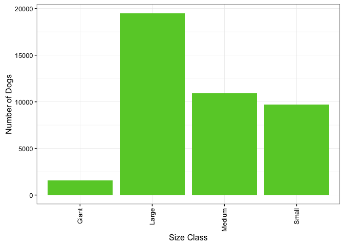
For a city filled with apartment buildings, Seattle-ites really love large dogs (almost as much as medium and small dogs combined!).
I wonder if this trend varies depending on which part of the city the pets are living in.
Dog Populations by Zip Code
First let’s see the density of dogs living in each zip code. Looks like we have some messy zip code data with quite a few zip codes not falling in the Seattle area. We’ll use a list of Washington State zip codes to narrow this list down.
# Import Zipcode dataset
zipcodes <- read.csv("Zipcodes.csv", header = TRUE, stringsAsFactors = FALSE)
# Match zipcodes in database to those listed on dog licenses
dogs_5$zip <- zipcodes[match(dogs_5$Zip.C, zipcodes$ZIP), "ZIP"]
# Make zipcodes factors
dogs_5$zip <- as.factor(dogs_5$zip)
# How many are missing?
sum(is.na(dogs_5$zip))## [1] 365Ok, so there were 365 dog licenses that didn’t list appropriate zip codes. That’s alright, that’s less than 1% of our dataset. Let’s move forward.
It looks like several of the zipcodes listed are “industrial” zip codes. We’ll replace the zip code with the residential zip code that each industrial one falls within.
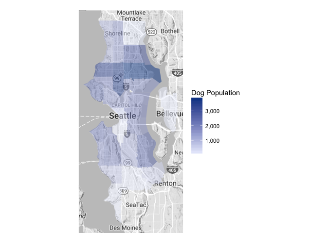
Looks like the highest populations of licensed dogs are found in zipcodes 98115, 98103, and 98117. That corresponds roughly to Northeast Seattle, the area between Fremont and Greenwood, and the Ballard to Crown Hill area. It is certainly possible that the high dog populations in those areas could be correlated with the human population in the same areas. Let’s see how many licensed dogs there are per person in these areas.
Human Population Data Obtained Here
human_pop <- read.csv("Human_Pop.csv", header = TRUE, stringsAsFactors = FALSE)
# Make a copy of our dataset (dog populations by zipcode)
pop_zip_2 <- pop_zip
# Match human populations from new dataset to zipcodes from
# dog population dataset
pop_zip_2$h_pop <- human_pop[match(pop_zip_2$region, human_pop$Zip),
"Population"]
pop_zip_2$h_pop <- gsub(",", "", pop_zip_2$h_pop)
pop_zip_2$h_pop <- as.numeric(pop_zip_2$h_pop)
# Create new factor: dog_human (i.e. ratio of dogs to humans)
pop_zip_2 <- pop_zip_2 %>% filter(!is.na(h_pop)) %>% filter(h_pop >
10) %>% mutate(dog_human = value/h_pop) %>% select(1, 4)
# Change variable names for choroplethrZip
pop_zip_2 <- rename(pop_zip_2, value = dog_human)
# Plot
zip_choropleth(pop_zip_2, zip_zoom = (pop_zip_2$region), legend = "Dog:Human Ratio",
reference_map = TRUE, num_colors = 1)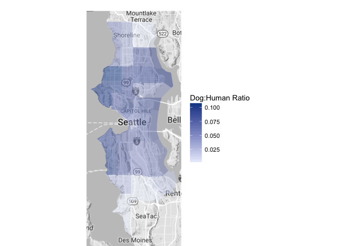
Generally speaking, central Seattle has a higher “Licensed Dogs : People” Ratio than the neighborhoods along the north and south edges. The highest proportion is found in zipcode 98117 or the Ballard to Crown Hill area with roughly 1 licensed dog for every 10 people. That is a residential area with lots of homes and fewer apartment buildings than the downtown-area.
I wonder if there are more large dogs in those house-filled areas and small dogs in apartment-laden areas. Let’s map dog populations by their size.
These figures will be proportions of small, medium, large and giant dogs in proportion to the number of dogs in each zipcode.
Dog Populations by Size
Small
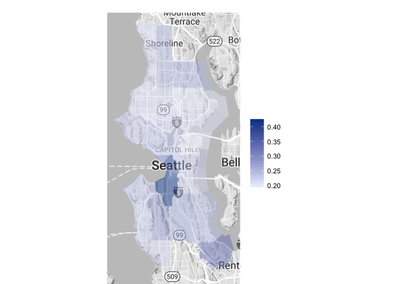
Medium
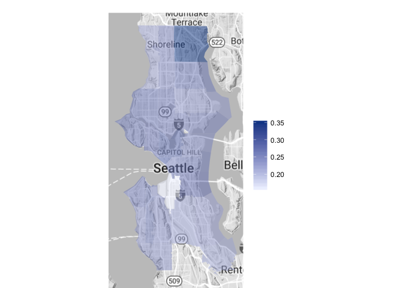
Large
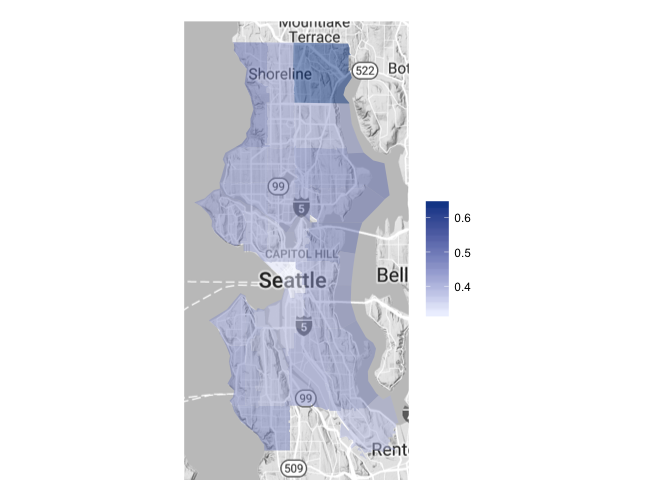
Giant
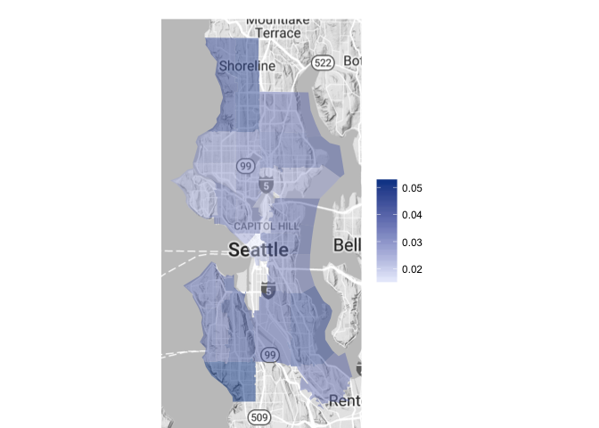
Caveats of Dog Size by Zipcode
Wow! Looks like the largest proportion of small dogs is quite concentrated to zipcodes 98134 (Industrial District) and 98101 (Downtown Seattle, near Pike Place Market). These zip codes do have relatively small total dog populations though, totalling at only 38 and 487 dogs, respectively.
Medium, large and giant sized dogs have a generally more consistent proportional distribution throughout the city. Both medium and large dogs have a higher than average proportion in zip code 98155, but again, this area boasts a small overall dog population (17 dogs total).
Dog Names
Just for fun, let’s take a look at the most popular dog names in Seattle. Word cloud, anyone?
# Create a corpus
names <- Corpus(VectorSource(dogs_5$Name))
# Convert to plain text document
names <- tm_map(names, PlainTextDocument)
# Remove numbers and punctuation, just in case
names <- tm_map(names, removeNumbers)
names <- tm_map(names, removePunctuation)
# Make all names lowercase
names <- tm_map(names, content_transformer(tolower))
# Generate the wordcloud
wordcloud(names, scale = c(5, 0.2), max.words = 150, random.order = FALSE,
rot.per = 0.35, use.r.layout = TRUE, colors = brewer.pal(6,
"Greens")[c(4, 5, 6, 7, 8, 9)])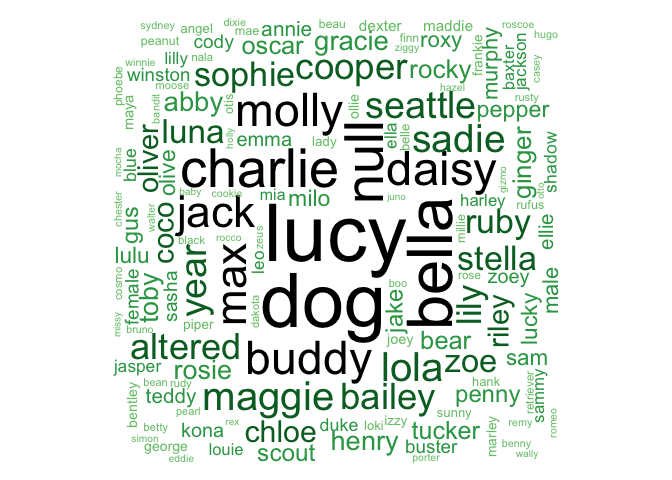
Oops! Looks like a few of those are probably not real names. We’ll go ahead and remove “dog”, “null”, “altered”, “female”, “male”, “labrador”, “retriever”, “year”, and “seattle” from the wordcloud.
# Remove non-names
names_2 <- tm_map(names, removeWords, c("dog", "null", "seattle",
"altered", "female", "male", "labrador", "retriever", "year"))
# Generate the wordcloud
wordcloud(names_2, scale = c(5, 0.2), max.words = 150, random.order = FALSE,
rot.per = 0.25, use.r.layout = TRUE, colors = brewer.pal(6,
"Greens")[c(4, 5, 6, 7, 8, 9)])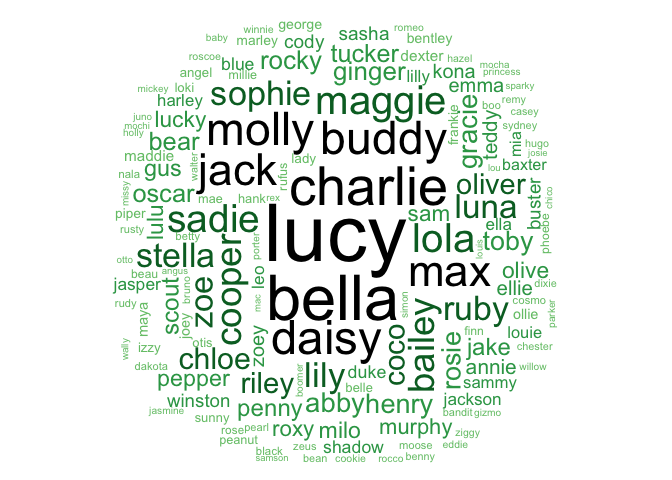
Wow! Lucy looks like the clear winner here!
Looks like some other well-known dog names (like Buddy) are pretty common in Seattle. How about “Rover”?
dogs_5 %>% filter(Name == "Rover")## License.Type.Sold Gender Primary.Breed Primary.Color
## 1 Dog Altered 1 year Male German Shepherd Rust
## 2 Dog Altered 1 year Male Labrador Retriever Chocola
## 3 Dog Altered 2 year Male Maltese Red
## 4 Dog Altered 2 year Male Labrador Retriever Black
## 5 Dog Altered 2 year Male Australian Cattle Dog Black
## 6 Dog Unaltered SR/HC 2 year Male American Water Spaniel Liver
## Name Zip.C Male_Avg Female_Avg weight size_class zip
## 1 Rover 98112 85.0 85.0 85.0 Large 98112
## 2 Rover 98103 72.5 62.5 72.5 Large 98103
## 3 Rover 98103 5.5 5.5 5.5 Small 98103
## 4 Rover 98122 72.5 62.5 72.5 Large 98122
## 5 Rover 98125 40.0 40.0 40.0 Medium 98125
## 6 Rover 98117 37.5 32.5 37.5 Medium 98117There are 6 licensed dogs in Seattle named Rover!
Conclusions
Dogs are basically everywhere in Seattle, but are most highly concentrated closer to the center of the city rather than on bordering neighborhoods.
Regardless of apartment-living, Seattle-ites are big fans of big dogs throughout the city.
The highest dog to human ratio is found in the Ballard to Crown Hill area, with nearly 1 dog per 10 people.
Generally, Seattle would be a great place to be a dog sitter or walker. To increase the likelihood of finding customers, I’d suggest being open to walking or pet-sitting large dogs where possible.
For a company like Rover.com which aims to connect dog-parents to dog sitters and walkers, I’d recommend providing this type of city-wide breakdown to potential sitters. I’d also suggest reaching out to large-dog owners to investigate their interest in becoming a sitter of other large dogs.
Without both sitter and user data from Rover.com, I am unable to make recommendations regarding the best neighborhood to become a dog sitter.